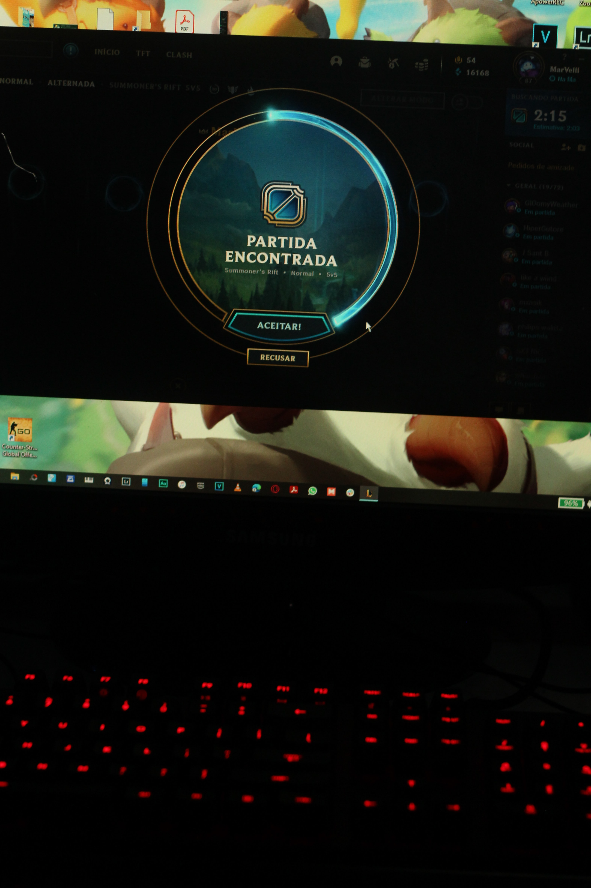

라이엇 게임즈가 개발 및 서비스 중인 MOBA 장르[6]의 게임. 국내에선 게임 명칭의 앞 글자들을 따서 롤(LoL), 서양에서는 롤의 약칭인 League 등으로 불린다.
이전까지 있었던 MOBA(AOS) 게임들보다 진입 장벽을 낮추는 것으로 높은 인기를 얻었고 현재는 전 세계에서 많은 유저들을 보유중인데 PC 게임 중 전 세계에서 많이 플레이하는 게임 중 하나이며 2016년 기준 월 플레이어 수 1억 명 이상을 달성했고 2019년 8월 기준 하루 전 세계 서버의 피크 시간 동시 접속자 수를 합치면 800만 명 이상이다. 또한 전 세계 E스포츠 대회 중 가장 많은 시청자 수 기록을 보유 중인 리그 오브 레전드 월드 챔피언십과 각 지역 리그 등등 수많은 E스포츠 대회가 많이 개최되는 중이다. 그리고 2018 자카르타·팔렘방 아시안 게임에서 공식 시범 종목으로 채택되기도 했다.파생 게임으로 CCG게임인 레전드 오브 룬테라가 출시되었고, 공식 모바일 버전인 리그 오브 레전드: 와일드 리프트가 2020년 말에 오픈베타를 진행하기 시작했다.
